Cultural and Youth Festival Activity Committee
Encouraging talent, creativity, and campus spirit

Asst. Prof. Shubhangi Ranawade Dhumal
Convener
Cultural and Youth Festival Department
Introduction
The objective of department of Cultural Activities is to develop the all round personality of the students by providing them a platform to represent their inner skills through various cultural activities. The cultural department is unique and strong in the college. The college provides various equipments to the Cultural departments for performance of the students who has interested in cultural activities. We have separate multipurpose Hall for the performance of cultural activities. There is a drastic change in each and every field of the society. By taking into consideration these changes, the students are very much interested to participate in various cultural activities which shall be useful to them in near future. Thus the students are updating their knowledge in every field through cultural activities. In this way the co-curricular activities play a pivotal role for building up the personality of the students. These activities teach them to develop a sense of social and personal responsibility. It also strengthens the confidence of the students to face the challenges in their future life. The students can become academically strong as well as socially and culturally strong. This department shows them the new avenues for their future. The committee of cultural activity always takes efforts to develop the academic, cultural and social talents of the students through various activities. The department of cultural activities organizes various events and activities for the students overall development.
Objectives
- Main objective is to create interest among the students about cultural activities.
- To develop all round personality and social values among the students.
- Extracurricular activities increase opportunities for the social interaction for the students.
- Extracurricular activities provide more knowledge about different cultures.
- Extracurricular activities create the thought of co-operation very effectively among the students.
Cultural Activity Committee:
- Prof. - President
- Prof. Shubhangi Ranawade - Convener
- Prof. Anuprita Bhor - Member
- Prof. Pratiksha Kodre - Member
- Prof. Deepali Chaudhari - Member
- Prof. Rohit Baravkar - Member
- Prof. Harshal Bhosale - Member
- Prof. Sarika Dhonge - Member
- Prof. Anuja Shinde - Member
- Prof. Zeba Tamboli - Member
- Prof. Bandu Ugade - Member
- Prof. Gaurav Tilekar - Member
Cultural Facilities
- Folk Dance
- Singing
- Action
- Elocution
- Solo Dance
- One-Act-Play
___Gallery___
 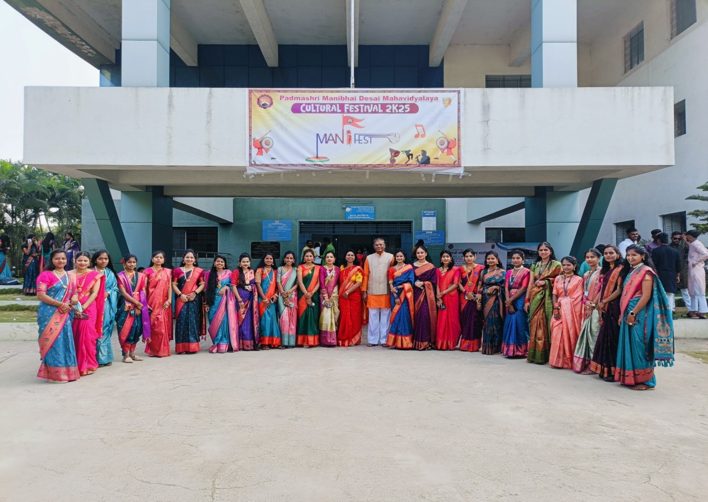
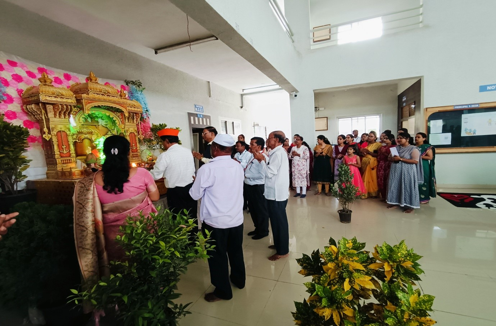
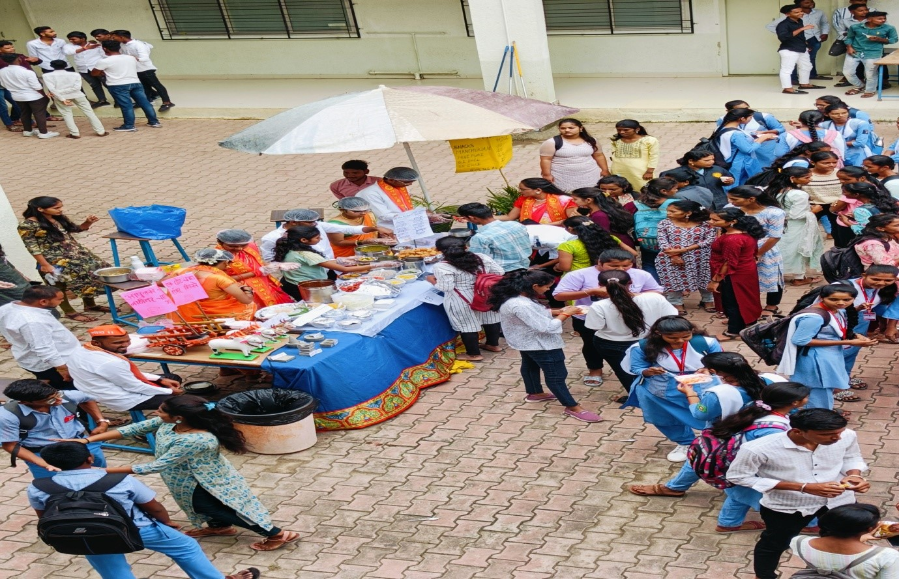
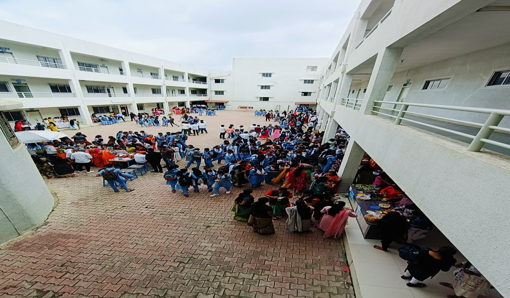
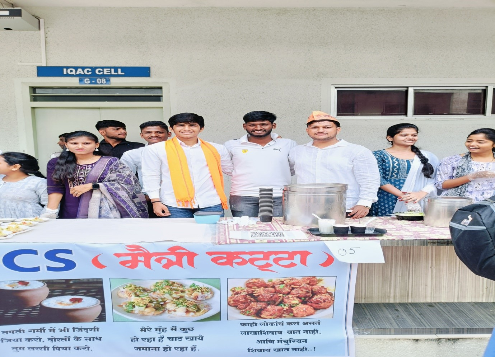
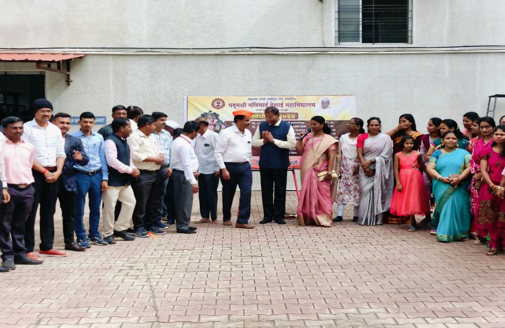
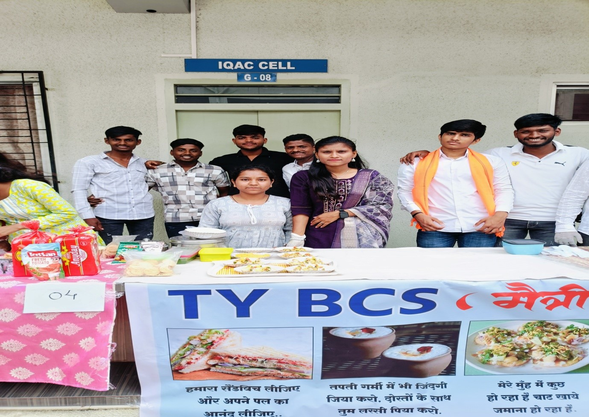
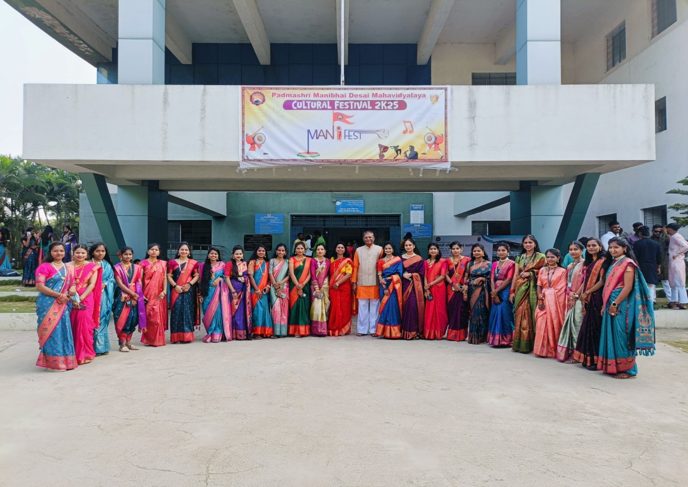
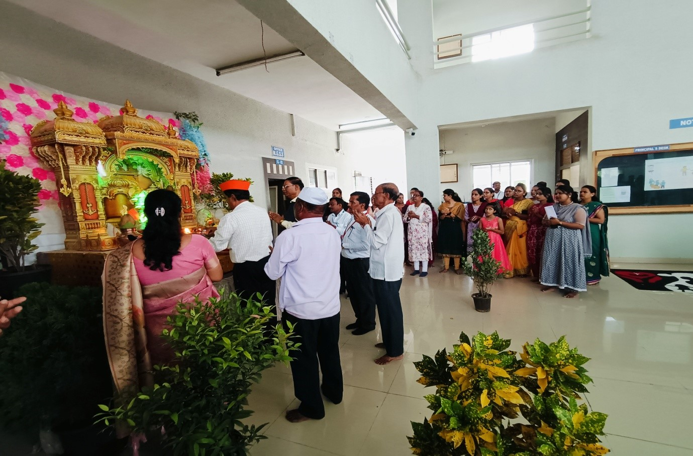
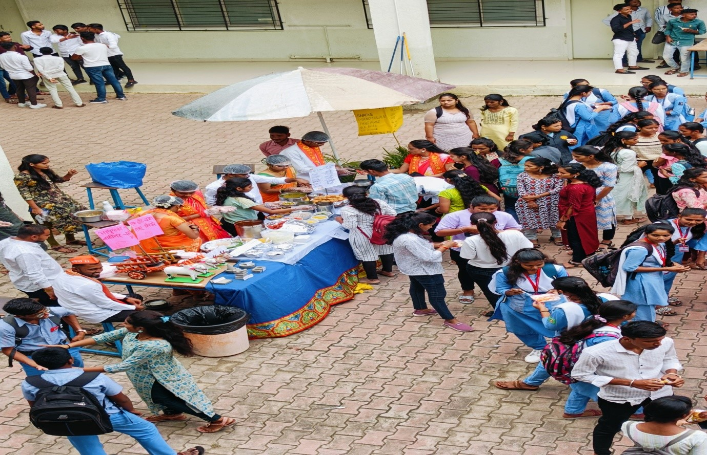
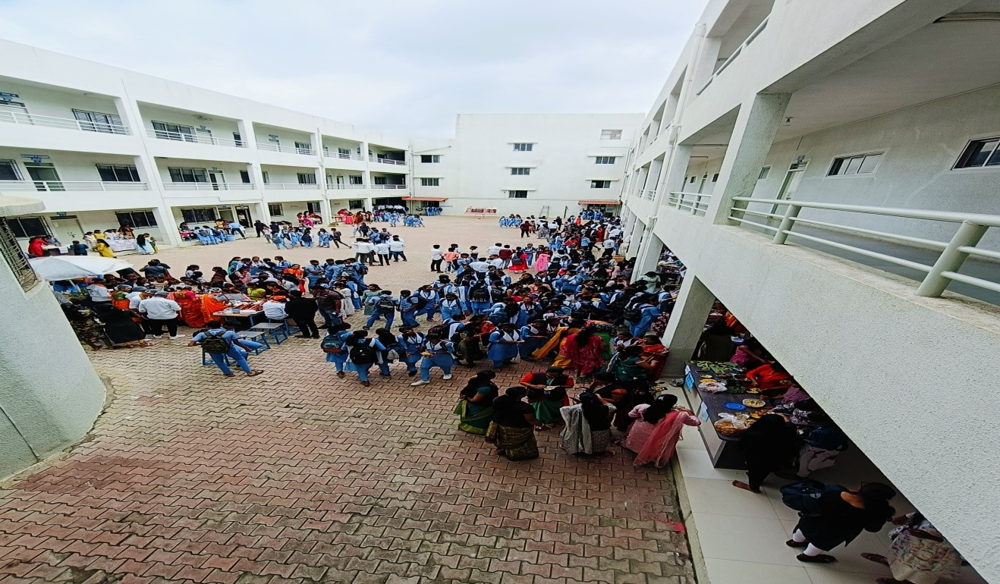
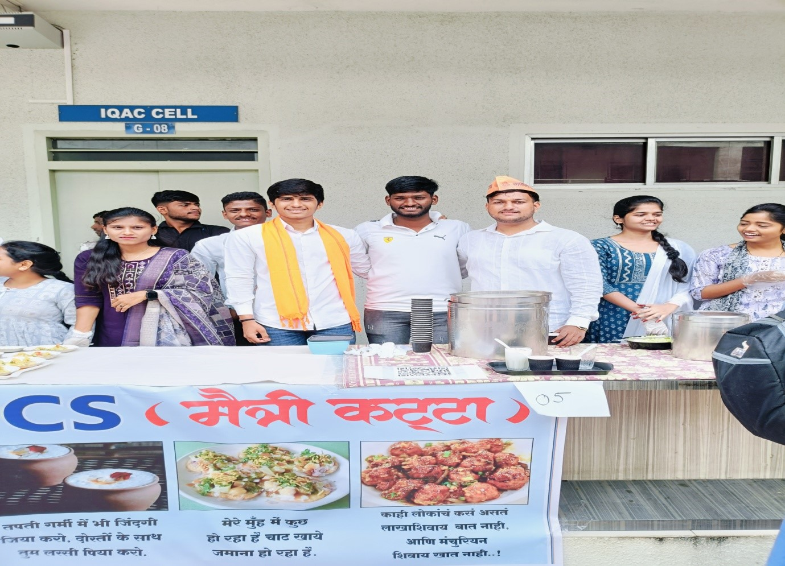
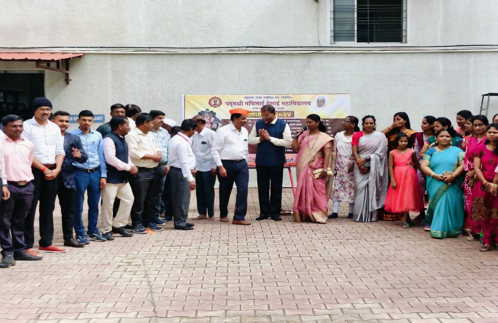
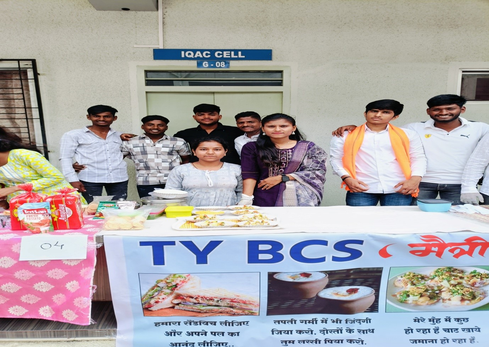